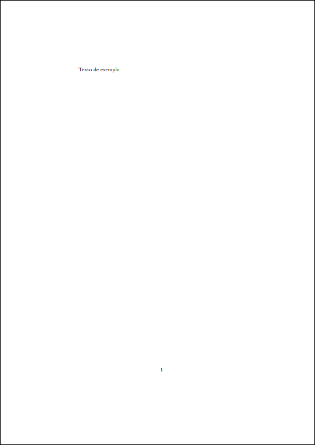
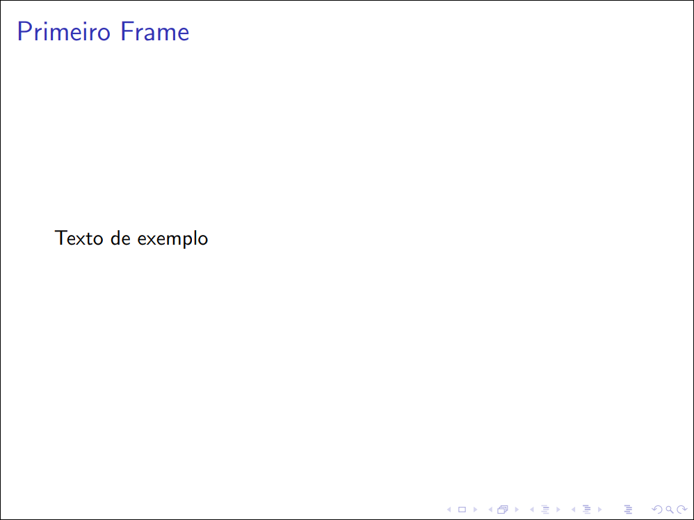

Estrutura geral e classes
Arquivos LaTeX são organizados, em resumo, da seguinte forma:
- Classe do documento
- Preâmbulo (próximo tópico)
- Documento
Na classe do documento se define justamente que tipo de documento se trata. As classes principais são:
article: Apesar do nome, serve para documentos no geral (o que inclui também artigos científicos).book: Para livros;beamer: Para apresentações de slides.
Há várias outras classes que podem ser interessantes, dependendo do tipo de documento. Você pode checar algumas delas na introdução a LaTeX do Overleaf.
No documento fica o conteúdo do seu documento: todos os capítulos, parágrafos, tabelas, imagens, etc. Ao longo deste capítulo serão vistos vários comandos que podem ser utilizados nele.
Comandos e ambientes
Você irá perceber que LaTeX é composto majoritariamente de comandos e ambientes.
Por exemplo, \textbf{<texto>} é o comando para deixar um texto em negrito:
\textbf{Este trecho está em negrito.}
Já este outro trecho não.
O que irá gerar algo como:
Este trecho está em negrito. Já este outro não.
Ambientes podem ser utilizados com:
\begin{<ambiente>}
<conteúdo>
\end{<ambiente>}
Prática
Esboce seu primeiro documento seguindo os passos:
-
Escolha uma das classes de sua vontade;
-
Crie um arquivo de texto (em branco) chamado
main.tex(o nome pode ser qualquer um, na verdade, mas para fins de nos entendermos por aqui, o chamarei demain.tex); -
Nesse arquivo, escreva
\documentclass{<classe>}, trocando<classe>pela classe de documento escolhida. Por exemplo, para aarticle, seu documento será:\documentclass{article} -
Escreva alguma frase para o conteúdo do seu documento. O conteúdo do seu documento deve ficar entre uma linha contendo
\begin{document}e outra contendo\end{document}. Por exemplo:\begin{document} Texto de exemplo \end{document}Se você estiver utilizando
beamer, cada slide deve estar em um ambienteframe, portanto o código deve ser:\begin{document} \begin{frame} Texto de exemplo. \end{frame} \end{document}Você pode ainda aproveitar e colocar um título para esse
frame, da forma:\begin{document} \begin{frame}{Primeiro Frame} Texto de exemplo. \end{frame} \end{document} -
Utilize seu compilador para gerar o PDF a partir do
main.tex, por exemplo:$ xelatex main.tex
Tendo feito esses 5 passos, você agora terá um arquivo main.pdf. Abaixo
seguem tanto o código final de exemplo quanto os PDFs gerados quando utilizando
article e beamer.
Com article
\documentclass{article}
\begin{document}
Texto de exemplo
\end{document}

Com beamer
\documentclass{beamer}
\begin{document}
\begin{frame}{Primeiro Frame}
Texto de exemplo
\end{frame}
\end{document}
